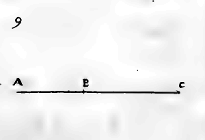
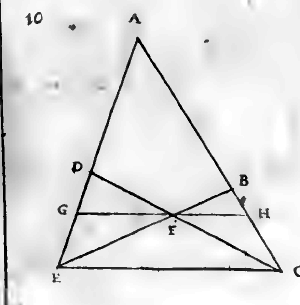

Lemma III & Propositio VI · Problema VI¶




LEMMA III.
(tab. 1. fig. 9) Sit B centrum grauitatis ponderum A C. Dico pondus B, aggregatum videlicet grauium A C ponderantium in B esse ad pondus C, vt AC ad BA. Quoniam B est centrum grauitatis ponderum A C, erit A ad C, vt CB ad BA, ergo componendo erit pondus B ad C, vt CA ad BA, quod &c.
PROP. VI. PROB. VI.
Exposita primi elementi figura A E C F, intelligantur in A E C pondera disposita A E C eo modo, quo ibi exposita fuere pondera G I H, ita vt D sit centrum grauitatis ponderum A E; B ponderum A C, F omnium; erunt itaque quatuor rationes AB ad BC, AD ad DE, EF ad FB, & CF ad FD, quarum duae quaelibet si secundùm numeros dentur, reliquas duas inuestigabimus.
Huius problematis sunt sex casus; etenim (vt ex arte combinatoria) ductis quatuor (quot videlicet rationes sunt datae) in tria, numerum scilicet vnitate deficientem exurgit 12, cuius medietas 6 praebet nobis numerum binariorum in quos distribui potest praedictus numerus 4.
f. 0025 · p. 8(tab. 1. fig. 4) Dentur igitur primò duae rationes EF ad FB, & CF ad FD, prior sit vt 2 ad 1, altera autem vt 3 ad 2; debemus modo manifestare reliquas duas rationes CB ad BA, & ED ad DA.
Quoniam pondus B (aggregatum videlicet ex A C) ad C est (ex praemisso tertio lemmate) vt recta AC ad AB: componitur verò ratio ponderis B ad C ex rationibus ponderum B ad F, & F ad C: vt verò B ad F, ita EF ad EB, & vt F ad C, ita DC ad DF; erit ratio AC ad AB composita ex rationibus EF ad EB, & DC ad DF: quoniam verò EF ad FB est vt 2 ad 1, componendo autem, indè per conuersionem rationis, & conuertendo, EF ad EB est vt 2 ad 3, fuitque etiam CF ad FD, vt 3 ad 2, & componendo CD ad FD, vt 5 ad 2; erit recta AC ad AB composita ex rationibus 2 ad 3, & 5 ad 2, seu ex his, 2 ad 3, & 3 ad \(1\tfrac{1}{5}\); hoc est eadem AC ad AB, vt 2 ad \(1\tfrac{1}{5}\), seu vt 10 ad 6; quare diuidendo erit CB ad BA, vt 4 ad 6, seu vt 2 ad 3. Eadem ratione, quia pondus D ad E, componitur ex rationibus ponderum D ad F, & F ad E, rectarum vid. CF ad CD, atque EB ad BF; idem pondus D ad E, hoc est AE ad DA componetur ex rationibus 3 ad 5, & 3 ad 1: ex his verò rationibus componitur illa 3 ad \(1\tfrac{2}{3}\), hoc est 9 ad 5; ergo AE ad DA est vt 9 ad 5, sed diuidendo ED ad DA erit vt 4 ad 5, est ergo CB ad BA, vt 2 ad 3, & ED ad DA, vt 4 ad 5, quod erat faciendum.
II. sint datae duae rationes EF ad FB, vt 4 ad 5, ED ad DA, vt 7 ad 9, debemus vestigare reliquas rationes CF ad FD, & CB ad BA.
Ratio rectae AC ad CB, ponderis videlicet B ad A componitur ex rationibus ponderum B ad E, & E ad A, rectarum videlicet EF ad FB, & AD ad DE, hoc est ex rationibus 4 ad 5, & 9 ad 7; quare AC ad CB componitur ex rationibus 4 ad 5, & 9 ad 7: haec autem composita ratio est ea quam habet 4 ad \(3\tfrac{8}{9}\), siue 36 ad 35, ergo AC ad CB est vt 36 ad 35, & diuidendo AB ad BC, vt 1 ad 35.
Similiter, quia CD ad CF, hoc est pondus F ad D componitur ex rationibus ponderum F ad E, & E ad D, rectarum videlicet EB ad BF, & DA ad AE, ex rationibus nempè 9 ad 5, & 9 ad 16; haec autem ratio eadem est, ac illa, quam habet 9 ad \(8\tfrac{8}{9}\), seu vt 81 ad 80, erit diuidendo DF ad FC, vt 1 ad 80.
III. quòd si datis duabus rationibus CF ad FD, vt 4 ad 5, & CB ad BA, vt 7 ad 9; dabimus etiam eo pacto, quo supra AD
f. 0026 · p. 9ad DE, vt 1 ad 35; & BF ad FE, vt 1 ad 80.
IV. Sit ratio ED ad DA, vt 20 ad 21, & CB ad BA, vt 99 ad 25, & oporteat notificare duas rationes EF ad FB, & CF ad FD. Componitur ratio rectae CF ad FD, ponderis nempe D ad C, ex rationibus ponderum D ad A, & A ad C, hoc est rectarum EA ad ED, & CB ad BA, videlicet ex rationibus 41 ad 20, & 99 ad 25: sed 41 ad \(5\tfrac{5}{99}\) componitur ex eisdem rationibus; ergo CF ad DF est vt 41 ad \(5\tfrac{5}{99}\), hoc est vt 4059 ad 500.
Eadem ratione, quia EF ad FB, hoc est pondus B ad E componitur ex rationibus ponderum B ad A, & A ad E, linearum videlicet CA ad CB, & ED ad DA, nempe ex rationibus 124 ad 99, & 20 ad 21; cumque ex eisdem rationibus componatur ratio, quam habet 124 ad \(103\tfrac{19}{20}\), hoc est vt 2480 ad 2079, erit in eadem ratione EF ad FB.
V. Dentur duae proportiones ED ad DA, vt 2 ad 1, & CF ad FD aequalitatis, oportet reliquas duas inuestigare, videlicet CB ad BA, & EF ad FB. Componitur CB ad BA, pondus nimirum A ad C ex rationibus ponderum A ad D, & D ad C, rectarum videlicet ED ad EA, & CF ad FD; hoc est ex rationibus 2 ad 3, & 3 ad 3, est igitur CB ad BA, vt 2 ad 3.
Similiter EB ad FB, hoc est ratio ponderis F ad E componitur ex rationibus ponderum F ad D, D ad E, rectarum videlicet CD ad CF, & AE ad AD, hoc est ex rationibus 2 ad 1, & 3 ad 1; sed ex eisdem rationibus componitur 2 ad \(\tfrac{1}{3}\), seu 6 ad 1, ergo EB ad BF est vt 6 ad 1, & diuidendo EF ad FB, vt 5 ad 1.
& vltimo. Quòd si datae proportiones fuerint CB ad BA, vt 2 ad 1, & EF ad FB aequalitatis ostendemus (vt supra factum est) ED ad DA, vt 2 ad 3, & CF ad FD, vt 5 ad 1.
SCHOLIVM.
Quoties autem problema fuerit impossibile ex ipsa operatione dignoscetur; si enim data fuerit ratio DF ad FC aequalitatis, & similiter BF ad FE aequalitatis, dico esse impossibilem quaestionem. Cum enim pondus C ad B, hoc est recta AB ad AC componatur ex rationibus ponderum C ad F, & F ad B, rectarum videlicet DF ad DC, & EB ad EF, hoc est rationum 1 ad 2, & 2 ad 1 erit pars AB ad totum AC, vt 1 ad 1 pars aequalis toti, quod est absurdum. Hoc aut non dissimile absurdum semper
f. 0027 · p. 10sequitur quoties quaestio proposita est impossibilis.
Huius propositionis primam partem, seu casum primum, cuius titulum transmiseram amico meo, nulla adiecta, aut indicata solutione, demonstrauit geometricè nobilis adolescens multitudine linguarum, artium, & scientiarum varietate conspicuus Petrus Paulus Carauaggius Petri Pauli filius praeceptoris sui. Eius demonstrationem appono, quae methodum hanc staticam geometrica in luce collocabit.
Sit EF ad FB, vt 2 ad 1, & CF ad FD, vt 3 ad 2; dico ED ad DA esse vt 4 ad 5, & CB ad BA, vt 2 ad 3.
(tab. 1. fig. 9, emend. fig. 10) Ducatur GH paralella EC. Quoniam EC ad GF, est vt CD ad DF, videlicet vt 5 ad 2, & EC ad FH, vt 15 ad 5, erit EC ad GH, vt 15 ad 11; pariterque AE ad AG, & AC ad AH, vt 15 ad 11; igitur quarum partium AE est 15, erit GE 4, similiterque quarum partium AC est 15, erit HC 4; cum itaque sit GE ad ED, vt CF ad CD, videlicet vt 3 ad 5; si vt 3 ad 5 ita fiat 4 ad alium numerum, prodibit numerus \(\tfrac{20}{3}\) pro ED, cuius residuum ex EA 15 erit \(\tfrac{25}{3}\); erit igitur ED ad DA, vt 4 ad 5.
Similiter quoniam, quarum partium AC est 15, CH est 4, estque CH ad CB, vt 2 ad 3; erit CB 6, & BA 9: quare CB ad BA erit vt 2 ad 3.